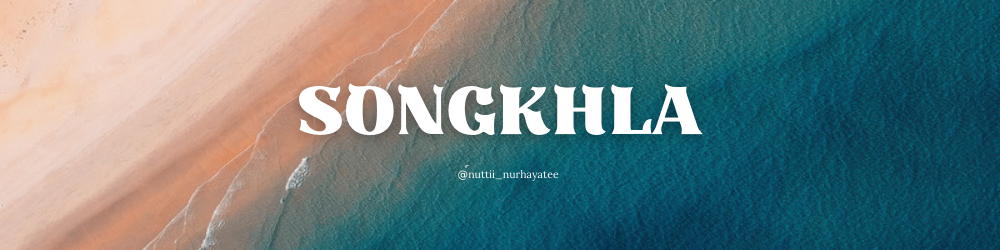
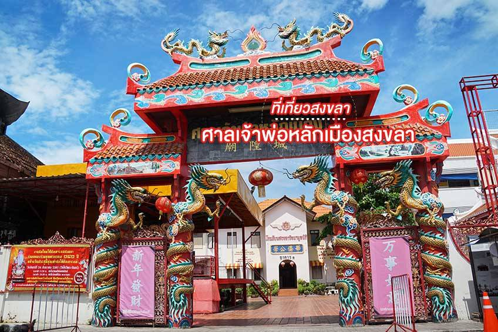

สงขลา ที่ทุกคนรู้จักนั้นอาจจะมี หาดใหญ่ เป็นที่เที่ยวในใจกันใช่ไหมคะ แต่จริงๆ แล้วสงขลามีที่เที่ยวเยอะแยะมากมายเลยแหละค่ะ จัดเต็มกันตั้งแต่ ที่เที่ยวสวยๆ อันซีน วัดดัง รวมไปถึงตลาดที่ต้องไปช้อปชิม ใครยังไม่รู้จะแพลนไปเที่ยวไหน ลองตามเรามาเที่ยวเลย กับ 22 ที่เที่ยวสงขลา นี้
1.เกาะยอ

เกาะยอ ตั้งอยู่บน ทะเลสาบสงขลา เป็นพื้นที่ของภูเขาสลับกับเนินสูง มีชุมชนอาศัยอยู่ประมาณ 4,000 คน ส่วนใหญ่จะมีเชื้อสายจีนค่ะ และมีสินค้าที่มีชื่อเสียงอย่าง ผ้าทอเกาะยอ ลายราชวัตถ์ นั่นเองที่เป็นเอกลักษณ์ของที่นี่ค่ะ ซึ่งเป็นลายที่ได้รับพระราชทานนามจากในหลวงรัชกาลที่ 7 ค่ะ เป็นชุมชนที่ยังคงวิถีชีวิตประเพณีในแบบดั้งเดิมเอาไว้ และมีที่เที่ยวสวยๆ มากมายหลายแห่งด้วยกันค่ะ
2. ลิวงค์ จะนะ
ลิวงค์ จะนะ แห่งนี้ เป็นสถานที่ท่องเที่ยวชื่อดังในจังหวัดสงขลา ที่ได้รับการขนานนามว่าเป็น สวิตเซอร์แลนด์จะนะ เพราะมี หุบเขาดินแดง ที่สวยงดงาม เงียบสงบ ร่มรื่น และบรรยากาศดีมากๆ ค่ะ เหมาะกับการนั่งชิลๆ พักผ่อน กางเต็นท์ แคมป์ปิ้ง ชมพระอาทิตย์ขึ้นและตกอย่างมากเลยค่ะ
3. เขาคูหา

เขาคูหา เป็นบรรยากาศของวิวทิวทัศน์ภูเขารูปร่างแปลกตาที่รายล้อมไปด้วยต้นสน แต่กลับมีความสวยงดงามมากๆ สาเหตุที่ทำให้ที่นี่กลายเป็นแบบนี้เพราะว่าเมื่อก่อนนั้นบริเวณนี้มีการทำสัมปทานเหมืองหินและมีการระเบิดภูเขา เลยทำให้ภูเขาของที่นี่มีรูปร่างหน้าตาแปลกไปจากเดิมค่ะ เลยทำให้เกิดเป็นจุดชมวิวสวยๆ แบบนี้ขึ้นมาค่ะ และอาจจะมีลุ้นได้ชมทะเลหมอกยามเช้าอีกด้วยนะคะ
4. วัดพระมหาเจดีย์ไตรภพไตรมงคล
วัดพระมหาเจดีย์ไตรภพไตรมงคล หรือ วัดสแตนเลส ตั้งอยู่บน เขาคอหงส์ โดยจะมีองค์พระเจดีย์ที่สร้างจากสแตนเลสทั้งหมด ถือได้ว่าเป็นเจดีย์สแตนเลสหนึ่งเดียวของโลกเลยค่ะ โดยบริเวณวัดยังสามารถมองเห็นวิวของเมืองหาดใหญ่ได้รอบเลยค่ะ และมี พระมหาธาตุเจดีย์ไตรภไตรมงคล ที่สร้างขึ้นเพื่อเป็นพระราชกุศลแด่ในหลวงรัชกาลที่ 9 เนื่องในโอกาสทรงครองราชครบ 60 ปี อีกด้วยค่ะ
5. วัดเขารูปช้าง

วัดเขารูปช้าง เป็นที่ตั้งของเจดีย์สวยหินอ่อนที่จำลองขึ้นมาจากมหาเจดีย์พุทธคยาในประเทศอินเดียค่ะ ซึ่งวัดนี้เกิดมาจากแรงศรัทธาของพระสิงคโปร์ อย่าง พระมงคลญาณคุณ หรือ จวงเจีย ยสโร เจ้าอาวาสรูปแรกของวัดเขารูปช้างค่ะ รวมไปถึงมีถ้ำที่ภายในประดิษฐาน พระพุทธรูปต่างๆ พระอวโลกิเตศวรโพธิสัตว์มหาสัตว์องค์ใหญ่ และมีหินงอกหินย้อยให้ได้ชมกันด้วยค่ะ 6. วัดราชประดิษฐาน (วัดพะโคะ)

วัดราชประดิษฐาน หรือ วัดพะโคะ เป็นวัดที่มีความเก่าแก่ที่สุดในจังหวัดสงขลา สร้างขึ้นบน ยอดเขาพัทธสิงค์ ที่เคยเป็นศูนย์กลางการปกครองเมืองในลุ่มทะเลสาบสงขลานั่นเองค่ะ และยังเคยใช้เป็นสถานที่ทำพิธีถือน้ำพระพิพัฒน์สัตยาของเมืองพัทลุงด้วยค่ะ ที่สำคัญเลยเป็นจุดเริ่มต้นของตำนาน หลวงพ่อทวดเหยียบน้ำทะเลจืด ที่มีชื่อเสียงอีกด้วยค่ะ
7. วัดแหลมพ้อ
วัดแหลมพ้อ แห่งนี้ ถือว่าเป็นวัดเก่าแก่และเป็นแหล่งท่องเที่ยวที่สำคัญของจังหวัดสงขลาเลยค่ะ เพราะมี พระนอนปางไสยาสน์ที่ใหญ่ที่สุดในไทย ประดิษฐานอยู่ค่ะ โดยที่พระบาทนั้นจะมีลวดลายภาพศิลปะที่สวยงดงามค่ะ และวัดแห่งนี้ยังตั้งวัดอยู่ใกล้ถนนเชิงสะพานติณสูลานนท์อีกด้วย ไม่ว่าใครที่ขับรถผ่านไปมา ก็จะสามารถมองเห็นองค์พระได้แต่ไกลเลยค่ะ
8. หาดสมิหลา

หาดสมิหลา หาดชื่อดังของสงขลา ที่คงจะไม่มีใครไม่รู้จัก เป็นหาดที่มีความสวยและขาวสะอาด พร้อมบรรยากาศของทิวสนที่ร่มรื่นตลอดแนวหาด ทำให้ที่นี่เป็นเหมือนแหล่งพักผ่อนหย่อนใจของชาวสงขลานั่นเองค่ะ และมี นางเงือก สัญลักษณ์ของเมืองสงขลาตั้งอยู่กลางหาดอีกด้วยค่ะ รวมไปถึงมีเกาะในบริเวณใกล้ๆ อย่าง เกาะหนู และ เกาะแมว เช่นเดียวกันค่ะ
9. หาดชลาทัศน์
หาดชลาทัศน์ เป็นชายหาดที่ยาวต่อเนื่องมาจากหาดสมิหลาค่ะ โดยจะมีแหลมสมิหลาเป็นจุดแบ่งเขตค่ะ ชายหาดของที่นี่จะขาวสะอาด สามารถเล่นน้ำได้ตลอดแนวเลยค่ะ มีถนนชลาทัศน์และแนวต้นสนให้ความร่มรื่นเลียบแนวชายหาดตลอดทางค่ะ นอกจากนี้ยังเป็นจุดชมพระอาทิตย์ขึ้นที่สวยงามอีกแห่งด้วยค่ะ รวมไปถึงที่หาดจะมีเวทีประชาชนเทศบาลนครสงขลา เป็นสวนสาธารณะพักผ่อนหย่อนใจของชาวสงขลาอีกด้วยค่ะ
10. ย่านเมืองเก่าสงขลา
ย่านเมืองเก่าสงขลา เป็นบริเวณที่มีประวัติความเป็นมาและมีอายุยาวนานกว่า 200 ปีเลยทีเดียวค่ะ จะเห็นได้จากความเก่าแก่ของตึก อาคาร และบ้านเรือนในบริเวณนี้ที่ยังคงอยู่ โดยมี ถนนนครนอก ถนนนครใน และ ถนนนางงาม เป็นถนนสายสำคัญค่ะ แต่ที่เป็นเอกลักษณ์ของที่นี่ ก็คงจะเป็น ภาพวาดสตรีทอาร์ท ตามตึกราบ้านช่องที่สะท้อนถึงเรื่องราววิถีชีวิตและวัฒนธรรมของคนสงขลานั่นเองค่ะ
11. มัสยิดกลางสงขลา
มัสยิดกลางประจำจังหวัดสงขลา หรือ มัสยิดกลางดิย์นุลอิสลาม นั้น เป็นศาสนสถานของอิสลามที่เป็นที่รู้จักกันอย่างดี ทั้ง ชาวสงขลา และ สายถ่ายภาพทั้งหลายเลยค่ะ ด้วยสถาปัตยกรรมที่สวยงดงามและมีสระน้ำทอดยาว ทำให้มัสยิดนี้ดูคล้ายกับทัชมาฮาลที่อินเดียเลยค่ะ แต่ความสวยงามของที่นี่จะอยู่ในช่วงตอนพระอาทิตย์ตกดินค่ะ บอกเลยว่าไม่แปลกใจว่า ทำไมสายถ่ายภาพทั้งหลายถึงถูกใจที่นี่กัน
12. เขาตังกวน
เขาตังกวน เป็นสถานที่ท่องเที่ยวที่สำคัญของสงขลาเลยค่ะ เป็นลักษณะของภูเขาลูกเล็กๆ ที่สามารถชมวิวของเมืองสงขลาได้โดยรอบเลยค่ะ และบนยอดเขายังเป็นที่ประดิษฐานของ เจดีย์พระธาตุคู่เมือง สงขลา ที่สร้างในสมัยอาณาจักรนครศรีธรรมราชอีกด้วยค่ะ ซึ่งนอกจากเจดีย์พระธาตุแล้วก็จะมีทั้ง ประภาคาร ศาลาพระวิหารแดง ที่ตั้งอยู่ด้านบนเขาไว้ให้ได้เที่ยวชมกันด้วยค่ะ
13. สวนสัตว์สงขลา
สวนสัตว์สงขลา เป็นสวนสัตว์แห่งแรกของภาคใต้ค่ะ ตั้งขึ้นมาเพื่อการอนุรักษ์ ขยายพันธุ์ รวบรวมสัตว์ป่าของไทย และเพื่อเป็นสถานที่ท่องเที่ยวพักผ่อนของชาวสงขลาค่ะ บริเวณรอบๆ จะถูกรอบล้อมด้วยทะเลสาบสงขลา มีสัตว์มากมายหลายชนิดด้วยกัน ทั้งจากไทยและต่างประเทศค่ะ ถ้าใครอยากหาที่เที่ยวครอบครัวก็ต้องแนะนำที่นี่เลยค่ะ
14. ตลาดกิมหยง
ตลาดกิมหยง นั้น เป็นตลาดเก่าแก่มีมาตั้งแต่สมัยเริ่มก่อตั้งเมืองหาดใหญ่เลยก็ว่าได้ค่ะ ภายในจะขายของมากมาย ทั้งสินค้าราคาถูก ของฝากเมืองหาดใหญ่ ผลไม้ และของใช้ต่างๆ เรียกได้ว่าเป็นตลาดที่มีของขายครบครันเลยทีเดียวค่ะ ใครที่แวะไปเที่ยวหาดใหญ่ก็ต้องไปซื้อของฝากติดไม้ติดมือกันจากที่ตลาดนี้ทั้งนั้นเลยค่ะ
15. ตลาดน้ำคลองแห
ตลาดน้ำคลองแห เป็นตลาดน้ำเชิงวัฒนธรรมแห่งแรกของภาคใต้ ที่ผสมผสานตลาดน้ำและตลาดโบราณเข้าไว้ด้วยกันค่ะ ซึ่งสินค้าที่นำมาจำหน่ายนั้นคือผลผลิตจากในท้องถิ่นต่างๆ ค่ะ ทั้งขนมพื้นเมืองและอาหารปักษ์ใต้มากมายหลากหลายชนิดด้วยกัน นอกจากนี้ยังสามารถชมวิวสองฝั่งแม่น้ำได้อย่างงดงามอีกด้วยค่ะ โดยตลาดน้ำจะเปิดทุกวัน ศุกร์ เสาร์ และอาทิตย์ ตั้งแต่ 13.00-21.00 น. เลยทีเดียวค่ะ เรียกได้ว่าเดินเที่ยวกันได้แบบเต็มอิ่มทีเดียวค่ะ
16. พิพิธภัณฑสถานแห่งชาติสงขลา
พิพิธภัณฑสถานแห่งชาติสงขลา เป็นโบราณสถานของชาติอายุมากกว่า 100 ปี และยังมีสถาปัตยกรรมที่สวยงดงาม สไตล์แบบจีนผสมเข้ากับตะวันตก สีแดงสลับขาว และตกแต่งด้วยภาพประติมากรรมนูนต่ำ ภาพเขียนสีต่างๆ ทั้งแบบไทยและจีน ภายในอาคารจะจัดแสดงศิลปะวัตถุต่างๆ ที่เป็นมรดกทางวัฒนธรรมเอาไว้ ไม่ว่าจะเป็น บานประตูไม้เดิมของจวน และวัตถุสมัยก่อนประวัติศาสตร์ที่ได้จากแหล่งโบราณคดีจากบ้านเชียงและกาญจนบุรี เป็นต้น
17. หาดบ่ออิฐ
หาดบ่ออิฐ หรืออีกชื่อเรียกคือ เลบ่ออิฐ เป็นบริเวณที่มีหาดทรายสีขาว และแนวหินที่นำมาวางเรียงเป็นแนวกั้นคลื่น ทั้งหมด 13 แท่ง ซึ่งหินแนวกั้นนี้ ก็ทำให้เกิดเป็นมุมสวยๆ นั่นเองค่ะ คือถ้ามองจากที่ไกลๆ แล้วคล้ายกับหัวของปลาฉลามหัวค้อนเลยค่ะ รวมถึงยังเป็นจุดขายอาหารทะเลสดๆ อีกด้วยนะคะ ใครอยากมาเดินถ่ายรูป พร้อมกับทานอาหารทะเลอร่อยๆ ต้องไม่พลาดที่นี่เลยค่า
18. น้ำตกโตนงาช้าง
น้ำตกโตนงาช้าง น้ำตกขนาดใหญ่ที่มีทั้งหมด 7 ชั้นด้วยกัน ซึ่งแต่ละชั้นก็จะมีเอกลักษณ์และความสวยงามที่ต่างกันไปค่ะ เริ่มตั้งแต่ชั้น โตนบ้า โตนปลิว โตนงาช้าง โตนดำ โตนน้ำปล่อย โตนฤาษีคอยบ่อ และชั้นสุดท้าย โตนเหม็ดชุน แต่นักท่องเที่ยวส่วนมากจะนิยมไปเล่นน้ำและชมน้ำตก ถึงแค่ 3 ชั้นแรกเท่านั้นนะคะ เพราะค่อนข้างเดินทางสะดวก ไม่ต้องขึ้นเขาสูงมาก และยังไม่อันตรายอีกด้วยค่ะ
19. หาดเก้าเส้ง
หาดเก้าเส้ง เป็นชายหาดที่มีโค้งอ่าวเล็กๆ มีหมู่บ้านชาวประมง และยังมีโขดหินสูงๆ ที่ดูแล้วคล้ายกับภูเขาอีกด้วยค่ะ โดยไฮไลท์จะอยู่ที่ก้อนหิน ที่ชาวบ้านเรียกกันว่า หัวนายแรง เป็นหินก้อนใหญ่อยู่ที่ปลายสุดของหาด ซึ่งจากบริเวณหัวนายแรงมองไปเราก็จะเห็นเกาะหนูเกาะแมวอยู่ไกลๆ ได้เลย ส่วนสาเหตุที่มีผ้าสีๆ มาผูกนั้น ก็เพราะชาวบ้านเชื่อกันว่ามีดวงวิญญาณนายแรงสิงสถิตเฝ้าทรัพย์นั่นเองค่ะ
20. เขาคอหงส์
เขาคอหงส์ พื้นที่สีเขียวผืนสุดท้ายของเมืองหาดใหญ่ ที่คงจะไม่มีใครไม่รู้จัก เพราะเป็นสถานที่ท่องเที่ยวที่โด่งดังสุดๆ ของ สงขลา แล้ว นักท่องเที่ยวจะนิยมไปพักผ่อน สูดอากาศบริสุทธ์และชมวิวบนของยอดเขากัน โดยไฮไลท์ของการมาที่นี่ก็คือเราจะต้องนั่งกระเช้าลอยฟ้าขึ้นไป ถือว่าเป็นกระเช้าขนส่งนักท่องเที่ยวแห่งเดียวในประเทศไทยเลย และด้านบนยังเป็นที่ประดิษฐาน พระพุทธมงคลมหาราช พระพทุธรูปประจำเมืองหาดใหญ่อีกด้วยค่ะ
21. วัดมหัตตมังคลาราม (วัดหาดใหญ่ใน)
วัดมหัตตมังคลาราม หรือที่ชาวบ้านเรียกว่า วัดหาดใหญ่ใน แห่งนี้ ตั้งอยู่ด้านหลังของตลาดหาดใหญ่ใน ริมคลองอู่ตะเภา ภายในวัดจะค่อนข้างเงียบสงบ ร่มรื่น ทำให้มีพุทธศาสนิกชนเดินทางมาทำบุญกันอยู่เรื่อยมา ซึ่งไฮไลท์ของวัดที่นักท่องเที่ยวนิยมมากราบไหว้ขอพรกัน ก็คือ องค์พระนอนขนาดใหญ่ นามว่า พระพุทธมหัตตมงคล ที่มีความยาวถึง 35 เมตร สูง 15 เมตร และกว้างกว่า 10 เมตร ถือได้ว่ามีขนาดใหญ่เป็นอันดับสามของโลกเลยค่ะ
22. ศาลเจ้าพ่อหลักเมืองสงขลา
ศาลเจ้าพ่อหลักเมืองสงขลา เป็นโบราณสถานที่สร้างขึ้นในสมัยรัตนโกสินทร์ เป็นศาลเจ้าแบบเก๋งจีน โดยสมัยที่สร้างนั้นมี พระยาวิเชียรคีรี (เถี้ยนเส้ง ณ สงขลา) เป็นผู้สำเร็จราชการเมืองสงขลาค่ะ ภายในศาล ก็จะประดิษฐานหลักเมือง ที่ทำจากไม้ชัยพฤกษ์ ซึ่งในหลวงรัชกาลที่ 9 นั้นทรงพระราชทานให้ประจำเมืองนี้ และมีการทำพิธีฝังไว้เมื่อวันที่ 10 มีนาคม ปีพ.ศ.2385 ค่ะ